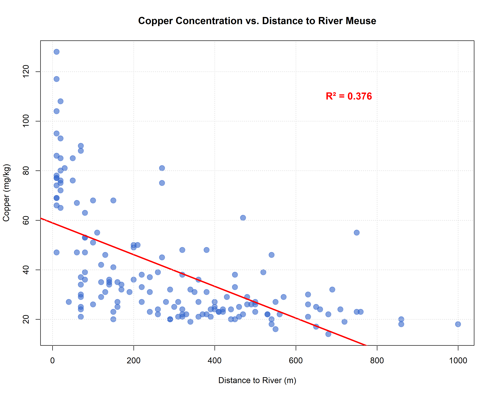
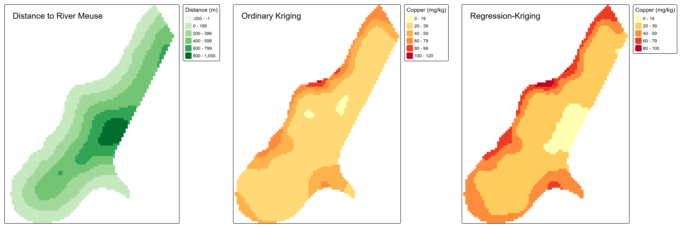
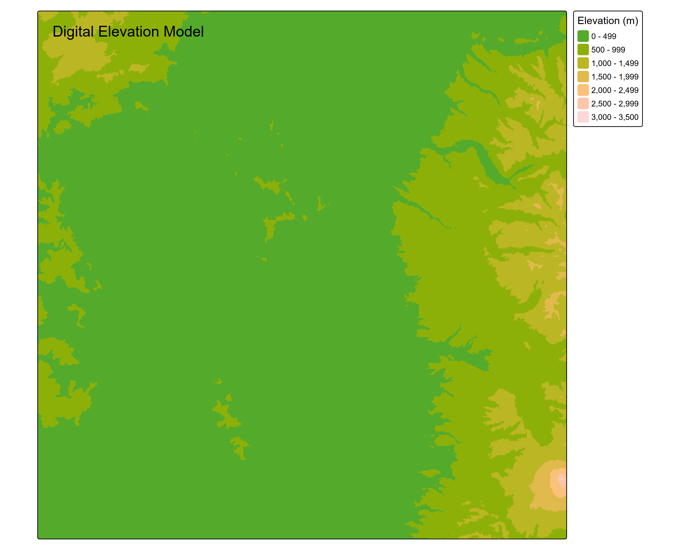
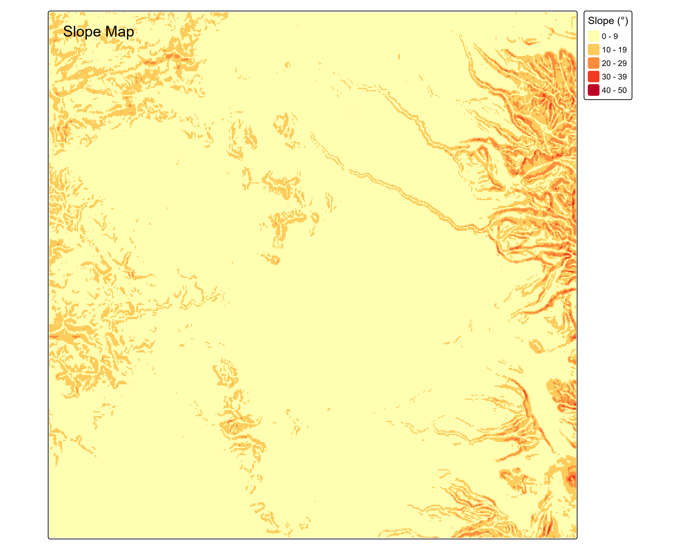
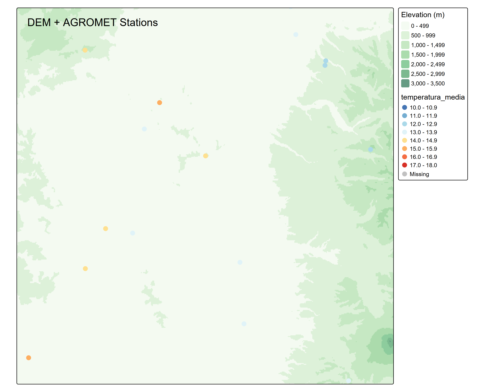
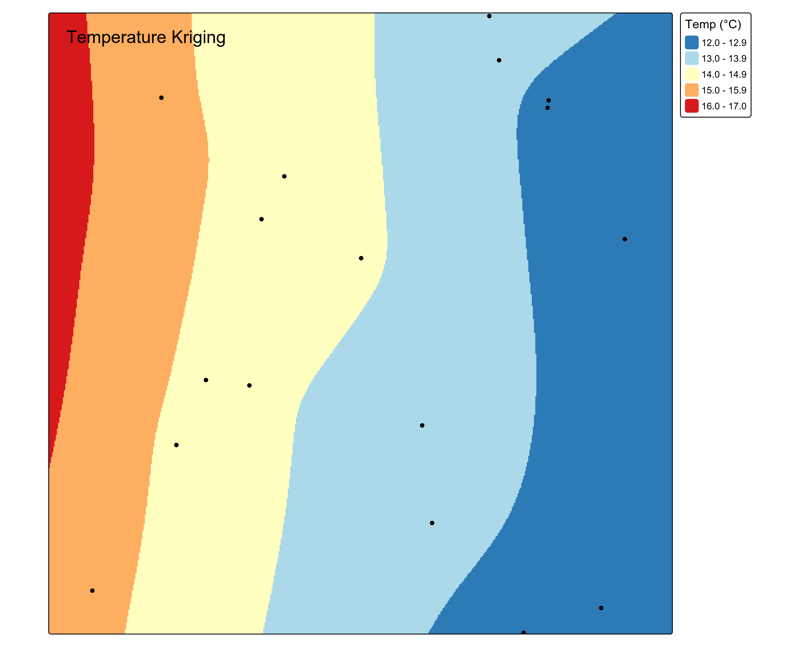

1. Introducción
La interpolación espacial es fundamental en ciencias ambientales para estimar valores de variables en ubicaciones no muestreadas. El Kriging es un método geoestadístico que utiliza la autocorrelación espacial para realizar predicciones óptimas, mientras que el Regression-Kriging combina un modelo de regresión con la interpolación de los residuos mediante kriging.
El objetivo de este trabajo es determinar bajo qué condiciones cada método ofrece mejor desempeño predictivo, utilizando validación cruzada leave-one-out (LOOCV) y métricas estadísticas (R², RMSE, MAE).
2. Estudio de Caso 1: Contaminación por Cobre (Dataset Meuse)
2.1. Contexto del Estudio
El dataset Meuse contiene mediciones de metales pesados en el valle del río Meuse, donde la contaminación histórica por actividades industriales ha generado patrones espaciales complejos. Se utilizó la distancia al río como covariable ambiental, asumiendo que la proximidad al cauce influye en la concentración de contaminantes.
2.2. Análisis Exploratorio
El primer paso consistió en evaluar la relación entre la concentración de cobre y la distancia al río mediante análisis de regresión lineal. Los resultados muestran una correlación moderada (R² = 0.376), lo que sugiere que otros factores no capturados por esta variable también influyen en la distribución espacial del contaminante.

2.3. Resultados Comparativos
| Métrica | Kriging Ordinario (OK) | Regression-Kriging (RK) | Mejor Método |
|---|---|---|---|
| R² (Coef. Determinación) | 0.568 | 0.537 | OK |
| RMSE (mg/kg) | 15.73 | 16.09 | OK |
| MAE (mg/kg) | 11.59 | 12.04 | OK |

2.4. Discusión
¿Por qué el Kriging Ordinario fue superior?
- Correlación insuficiente: La relación lineal entre cobre y distancia al río (R² = 0.376) no fue lo suficientemente fuerte como para que el componente de regresión aportara valor predictivo.
- Complejidad espacial: La distribución de cobre es producto de múltiples fuentes de contaminación (deposición atmosférica, escorrentía superficial, lixiviación), no solo la proximidad al río.
- Autocorrelación espacial: El semivariograma captura eficientemente la estructura espacial subyacente sin necesidad de covariables externas.
- Overfitting potencial: RK puede introducir ruido cuando el modelo de tendencia es débil, reduciendo la precisión predictiva.
3. Estudio de Caso 2: Temperatura y Gradiente Altitudinal
3.1. Contexto del Estudio
Se analizó la distribución espacial de temperatura ambiental utilizando elevación como covariable. La relación temperatura-elevación está regida por el gradiente adiabático atmosférico (~0.65°C/100m), lo que representa un caso ideal para Regression-Kriging debido a la fuerte relación física entre variables.
3.2. Validación Física del Modelo
| Métrica | Valor Observado | Interpretación |
|---|---|---|
| R² (obs vs pred) | 0.837 | 83.7% de la varianza explicada - Ajuste excelente |
| RMSE | 0.717°C | Error promedio < 1°C - Alta precisión |
| Sesgo (ME) | 0.002°C | Ausencia de sesgo sistemático |
| Correlación Temp-Elevación | -0.928 | Relación muy fuerte y negativa (físicamente coherente) |




3.3. Coherencia con Principios Físicos
- Gradiente adiabático: El modelo captura correctamente la disminución de temperatura con la elevación (~0.65°C por 100m).
- Patrón espacial realista: Temperaturas cálidas en valles (16-17°C) y frías en zonas montañosas (12-13°C).
- Influencia oceánica: El patrón respeta la moderación térmica del océano Pacífico en zonas costeras.
- Variabilidad local: Los residuos krigeados capturan microvariaciones no explicadas por el modelo lineal (efectos de exposición, albedo, cobertura vegetal).
4. Conclusiones Generales
4.1. Implicaciones Metodológicas
- Selección basada en evidencia: Regression-Kriging solo supera a Kriging Ordinario cuando existe una relación fuerte (R² > 0.6-0.7) entre la variable de interés y las covariables.
- Importancia de la validación cruzada: Las métricas LOOCV (R², RMSE, MAE) son esenciales para comparar objetivamente métodos.
- Validación física obligatoria: Los resultados deben ser coherentes con el conocimiento del dominio (gradientes atmosféricos, dispersión de contaminantes, etc.).
- Autocorrelación vs tendencia: En fenómenos con estructura espacial compleja y baja dependencia de covariables externas, OK puede ser más robusto que RK.
4.2. Lecciones Prácticas
- Análisis exploratorio primero: Evaluar la relación con covariables antes de elegir el método.
- Visualización temprana: Generar mapas preliminares permite detectar errores antes de análisis complejos.
- No asumir complejidad = mejor: Métodos más sofisticados no garantizan mejores resultados sin las condiciones adecuadas.
- Debugging crítico: Errores en coordenadas o transformaciones pueden invalidar completamente el análisis espacial.
4.3. Recomendaciones para Futuros Estudios
Para el caso de contaminación por cobre, se recomienda explorar modelos con múltiples covariables (tipo de suelo, uso de suelo, topografía) o métodos no lineales (Random Forest Kriging, Machine Learning Spatial). En estudios de temperatura, la incorporación de covariables adicionales como exposición solar, distancia a cuerpos de agua y cobertura vegetal podría mejorar aún más la precisión predictiva.